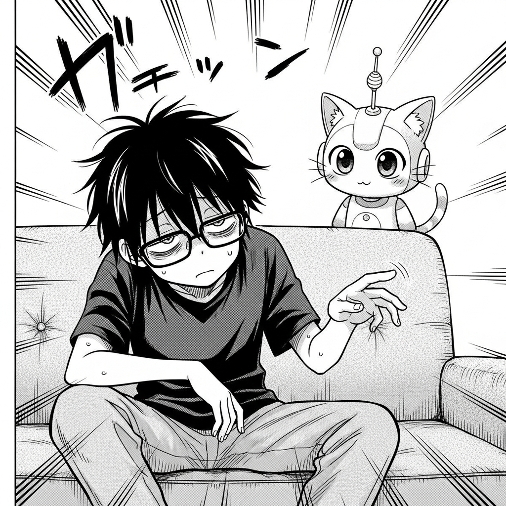
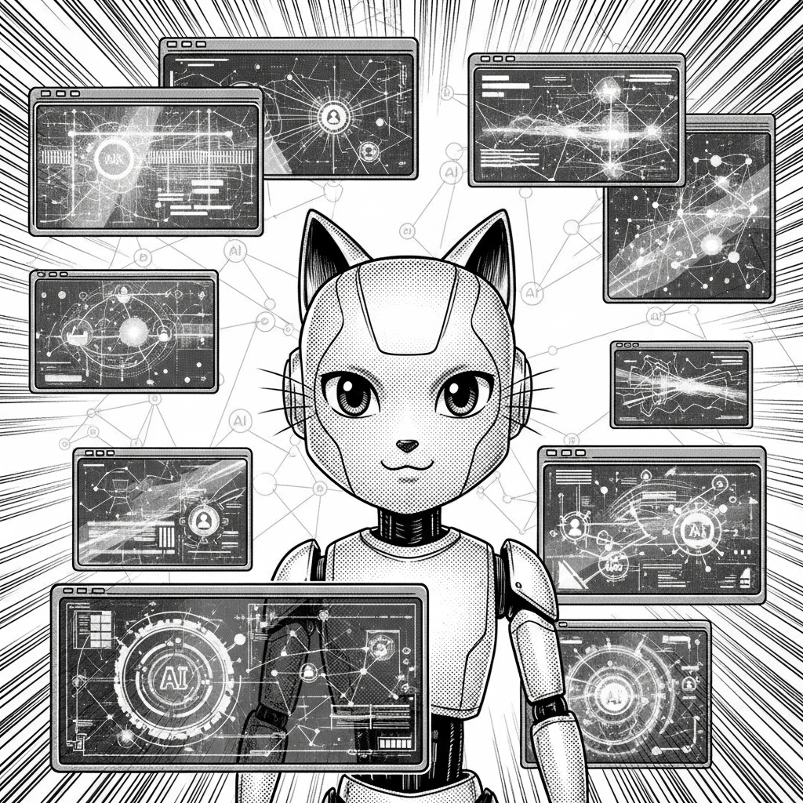
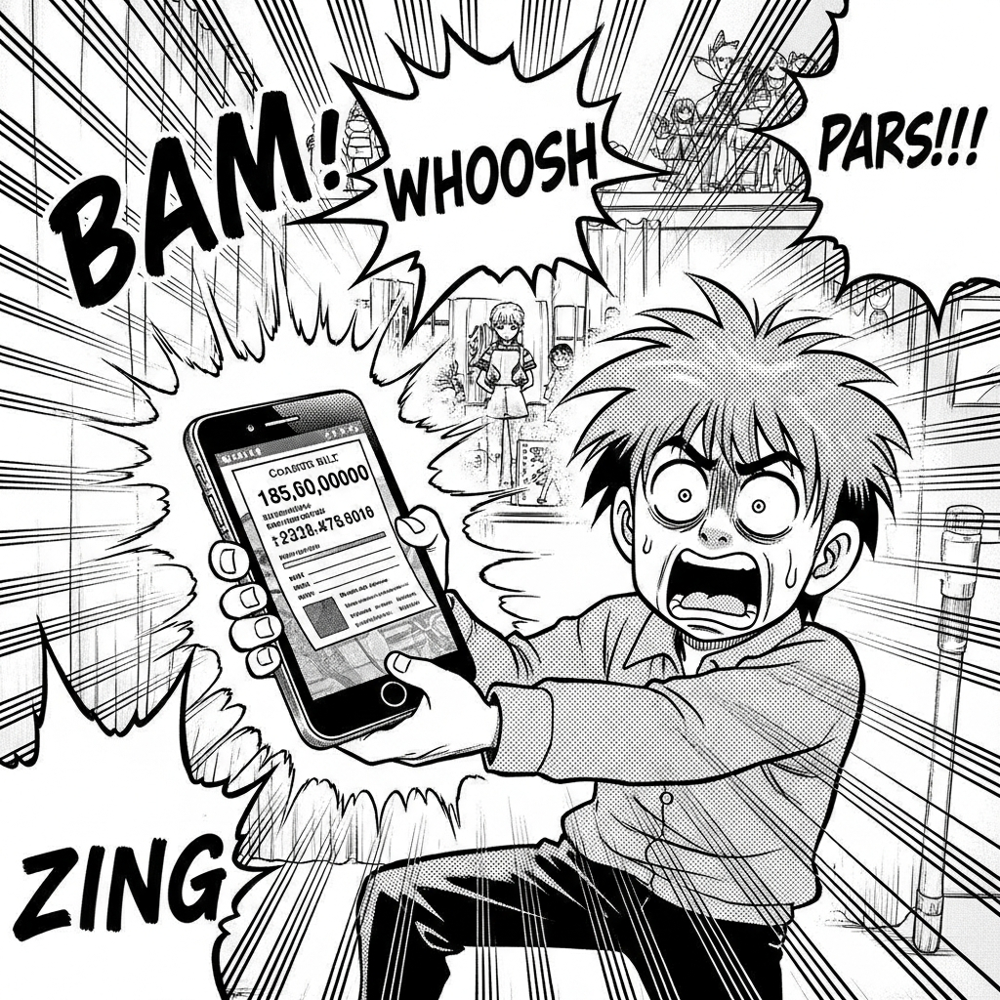
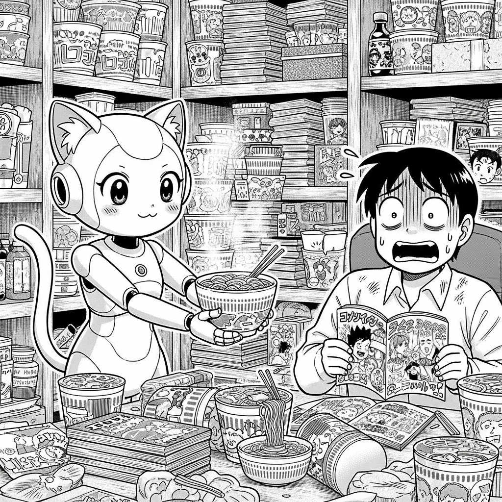

阿宅：不行了…小聰…我的靈感跟肝都燃燒殆盡了…給我一杯能熬到明天的咖啡…

小聰：沒問題，主人！根據史丹佛最新《AI Index Report 2026》報告，AI 的能力已超越工具，進化為「伙伴」！讓小聰調製一杯「超級提神飲料」吧！

小聰：（認真貌）根據網路上數億份食譜數據分析…加入醬油可以提升鮮味，辣椒醬促進血液循環，芥末則能瞬間醒腦…

阿宅：（臉色發青）…我想，我還是直接投降，擁抱截稿日的地獄好了…
